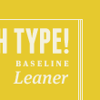

Lettering.JS
A jQuery plugin for radical web typography
Features + Uses
Web type is exploding all over the web but CSS currently doesn't offer complete down-to-the-letter control. So we created a jQuery plugin to give you that control. Here are a few example of what can easily be done with Lettering.js:
Kerning Type
Editorial Design
Manageable Code
 Complete Control
Complete ControlWhat people are saying
Le Gallerie
Check out how people have put Lettering.js to good use on their own sites. If you have something to contribute, by all means notify us.